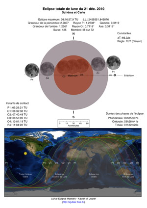
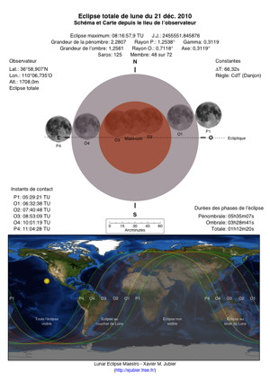

Schéma et carte en projection équirectangulaire au format PDF
Le fichier PDF en couleur et haute résolution contient un schéma de l’éclipse et une carte en projection équirectangulaire indiquant les zones de visibilité.
Les informations suivantes sont affichées à l’échelle sur le schéma en coordonnées équatoriales:- la position et l’orientation de la Lune aux instants de contact avec la pénombre et l’ombre terrestre. Pour l’observateur, seul les instants visibles sont représentés depuis son lieu d’observation
- la pénombre en gris et l’ombre en rouge
- l’écliptique
- la direction du mouvement de la Lune indiquée par une ligne verte discontinue
- diverses informations sur l’éclipse
- le point de plus grande éclipse signalé par un point jaune cerclé de orange
- les zones de visibilité délimitées par les courbes aux instants de contact en vert, jaune et rouge
- diverses informations sur l’éclipse


L’utilisation de ce schéma et de cette carte est libre tant que les informations du créateur sont présentes et n’ont pas été modifiées.